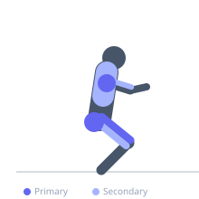
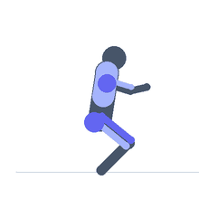

Exercise guide / Battle Rope Waves in Squat Position
Battle Rope Waves in Squat Position
Battle rope alternating waves performed from a sustained squat position, combining the cardiovascular and upper body demand of battle ropes with isometric quad and glute loading from the squat hold. The sustained squat depth during the wave sequence dramatically increases lower body time-under-tension while training the upper body explosively. This is a metabolic conditioning exercise that develops work capacity, leg endurance, and arm power simultaneously.
Primary muscles
rectus femoris
gluteus maximus
deltoid anterior
Secondary muscles
trapezius upper
biceps brachii long head
adductor magnus
Stabilizers
transverse abdominis
Equipment
No Equipment (Bodyweight)


Starting position
- Hold one end of a battle rope in each hand. Descend to a squat position (60-90 degrees of knee flexion) and maintain this position throughout the exercise.
Setup
- Ensure the battle rope anchor is secure. The rope must be long enough to allow the squat position while still creating waves toward the anchor.
Steps
- Step 1: Descend into the squat position and hold. Keep the chest up and back flat.
- Step 2: Begin alternating arm waves — drive the right hand down then up, then the left, creating alternating waves toward the anchor.
- Step 3: Maintain the squat depth throughout the entire wave sequence.
- Step 4: Continue for the prescribed duration, then stand to rest.
Coaching cues
- Stay down — the whole point of the squat position is the sustained lower body load
- Drive the waves fast — the battle rope conditioning benefit comes from wave speed
- Chest up in the squat — maintain a proud posture
Breathing
- Breathe continuously and rhythmically throughout — do not hold the breath. The metabolic demand is high.
Range of motion
- Squat depth that can be sustained for the full set. Waves should be full — rope touching the floor between waves.
Tempo
- 30-60 second work intervals. Alternate arms as fast as possible while maintaining squat depth.
Common mistakes
- Rising out of the squat as fatigue sets in — the squat hold is the primary loading stimulus
- Slowing the wave speed during the set — maintain wave intensity throughout
- Using a squat depth that is too deep to hold for the entire set duration — choose a sustainable depth
Safety
- Choose a squat depth you can hold for the full prescribed duration — shallow is fine initially
- If knee pain occurs during the squat hold, reduce depth or rest
Training
- endurance: 1–5 reps
- endurance: 2–5 sets
- Rest: {'endurance': 60}